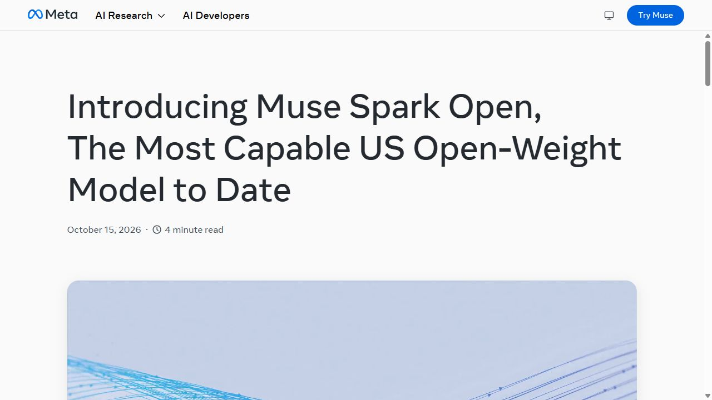

메타, 직접 내려받아 쓰는 대형 AI 공개
메타가 10월 15일 대형 AI ‘Muse Spark Open’의 모델 파일을 공개했다. 메타 웹사이트에 질문을 보내는 방식 외에, 개발자가 모델을 내려받아 자기 장비에서 운영할 수 있게 됐다. 코딩과 여러 단계의 컴퓨터 작업을 겨냥한 공개다. 메타 발표

공개된 것은 AI가 학습하면서 익힌 수많은 숫자, 즉 가중치다. 완성된 앱 하나를 설치하는 일과는 다르다. 모델을 불러오는 프로그램, 충분한 메모리, 실제 업무에 연결할 도구를 함께 준비해야 한다. 이 구분을 먼저 알면 ‘내 컴퓨터에서 실행’이라는 발표를 현실적으로 읽을 수 있다.
메타가 내놓은 장면도 눈길을 끈다. 회사는 자사 코딩 도구 Muse Code와 이 모델로 영상 편집 프로그램 다빈치 리졸브를 다루며, 장면을 확인하고 세로 화면에 맞게 자르는 작업을 시험했다고 밝혔다. 사용자가 매번 답을 복사해 옮기는 챗봇보다, 프로그램에서 일을 이어 가는 AI에 가깝다. 다만 이 장면은 메타가 공개한 시연이며 편집부의 직접 실행 결과는 아니다.
보고 듣는 자료는 다양하고, 답은 글로 만든다
공식 모델 설명서에 따르면 입력에는 글, 이미지, 영상, 음성이 들어가고 출력은 글이다. 회의 영상을 이해해 설명하거나 화면을 보고 다음 행동을 정하는 데 쓸 수 있지만, 모델 자체가 곧바로 새 음성이나 완성 영상을 내보내는 제품은 아니다. 실제 편집은 별도로 연결된 프로그램이 수행한다.
한 번에 참고할 수 있는 자료의 최대 크기는 100만 토큰이다. 토큰은 AI가 글을 읽고 쓸 때 나누는 작은 조각으로, 한국어 글자 수와 일대일로 대응하지 않는다. 많은 자료를 한 요청에 담을 여지는 커졌지만, 중요한 조건을 빠짐없이 찾았는지는 결과에서 따로 확인할 부분이다.
예를 들어 공개 가능한 행사 영상에서 세로 홍보 영상에 쓸 장면을 고른다고 해 보자. 먼저 ‘발표자가 설명을 마친 부분 세 곳과 해당 시각을 찾아 달라’고 요청할 수 있다. 이어 선택한 부분을 자르고 자막을 붙이는 도구를 연결한다. 여기서 장면 선택, 편집 실행, 최종 재생 확인은 각각 다른 작업이다. 마지막 영상이 정말 자연스러운지는 사람이 처음부터 끝까지 봐야 한다.

8,160억 개 중 매번 420억 개를 계산한다
모델의 전체 규모는 약 8,160억 개이고, 답을 한 조각씩 만들 때 실제 계산에 참여하는 부분은 약 420억 개다. 전체 구성 요소 가운데 질문에 맞는 일부를 골라 움직이는 ‘전문가 혼합’ 구조다. 큰 모델의 여러 능력을 유지하면서 매번 필요한 계산을 줄이려는 방식이다.
계산에 참여하는 부분이 줄어도 나머지 모델 파일을 버릴 수는 없다. 다음 질문이나 다음 단계에서는 다른 부분이 필요하기 때문이다. 그래서 계산량을 나타내는 420억 개와 장비에 담아 둘 전체 8,160억 개를 같은 의미로 읽으면 안 된다. 실제 설치에서는 저장 공간과 실행 중 메모리를 따로 계산한다.
메타가 제시한 데스크톱 구성은 M5 Ultra Mac Studio 두 대다. 각각 최대 512GB의 통합 메모리를 사용하는 구성으로 소개했다. 보통 사무용 노트북 두 대를 연결하면 된다는 설명과는 거리가 멀다. 모델 설명서도 압축 형식인 NVFP4에서 최소 700GB의 GPU 메모리, BF16에서는 2TB를 요구한다고 안내한다.
NVFP4와 BF16은 모델의 숫자를 얼마나 정밀하게 저장하는지 나타내는 방식이다. 적은 비트로 저장하면 용량을 줄일 수 있지만, 계산 프로그램과 장비가 그 형식을 지원해야 한다. 파일 크기만 보고 설치를 시작하기보다 모델 설명서가 요구하는 실행 환경을 먼저 보는 편이 낫다.
애플 장비에서 쓰는 실행 프로그램 MLX LM은 모델 불러오기와 대화, 추가 학습, 여러 장비를 나눠 쓰는 기능을 제공한다. 프로그램을 설치했다고 모든 모델이 같은 조건으로 작동하는 것은 아니다. MLX LM 공식 안내와 메타 모델의 요구 사항을 함께 읽어야 하는 이유다.
‘최고 성능’보다 자신이 맡길 일을 본다
메타는 미국에서 공개된 모델 가운데 최고 수준이라고 소개했다. 이 표현을 전 세계 모든 모델보다 우수하다는 결론으로 넓혀서는 안 된다. 모델 설명서의 비교표에서도 작업 종류에 따라 다른 모델이 앞서는 항목이 있다. 코딩, 화면 조작, 자료 검색은 서로 다른 능력을 측정한다.
평가 방법 보고서는 직접 시험한 값, 다른 회사가 발표한 값, 외부 평가 기관의 값을 구분한다. 일부 경쟁 모델은 당시 파일을 구할 수 없어 자체 발표 수치를 가져왔다. 따라서 한 그래프 안의 막대가 전부 메타가 같은 환경에서 재시험한 결과라고 읽으면 정확하지 않다.
실제 비교에서는 업무의 끝을 먼저 정하는 편이 유용하다. 예를 들어 ‘영상을 이해했다’는 설명 대신, 편집 후보 세 곳의 시각이 맞는지, 잘라 낸 영상에서 말이 끊기지 않는지, 결과 파일이 재생되는지를 확인한다. 이런 확인할 사항이 있어야 모델이 그럴듯한 답을 했는지와 실제 일을 끝냈는지를 구별할 수 있다.
직접 운영의 장점과 부담은 함께 온다
직접 운영하면 어떤 장비에서 요청을 처리할지, 언제 모델을 바꿀지, 어떤 자료를 연결할지 선택할 여지가 커진다. 예를 들어 외부 전송이 제한된 연구 자료를 다루는 팀이라면 내부 장비 운영을 검토할 수 있다. 반대로 소량의 작업만 하는 개인에게는 장비 확보와 관리 비용이 더 큰 부담일 수 있다.
‘내 장비에서 모델이 실행된다’는 조건만으로 모든 통신이 끊기는 것도 아니다. 검색 도구, 외부 저장소, 업무용 서비스가 연결되면 그 도구가 자료를 보낼 수 있다. 모델 위치와 연결 도구의 통신 범위를 나누어 확인하는 것이 실제 운영의 핵심이다.
장비가 없다면 메타가 안내한 외부 제공사의 API 경로도 있다. API는 다른 프로그램에서 모델에 요청을 보내는 연결 방식이다. 모델 파일을 무료로 받을 수 있어도 이런 호스팅 서비스 이용료와 저장·운영 비용은 별도다. 이용량이 적을 때와 계속 가동할 때의 비용 구조도 다르다.
상업 이용 조건은 사업 형태에 따라 다르다
이 모델은 무조건 제한 없이 쓰는 라이선스가 아니라 Muse Model License를 따른다. 사용 제품이나 관련 안내에 지정된 출처 표시를 넣고, 허용되지 않은 사용을 피하는 등의 조건이 있다.
특히 모델을 API 같은 서비스로 다른 고객에게 제공하는 사업에서는 연결 회사들을 포함한 12개월 총매출이 2천만 달러를 넘으면 메타와 별도 계약이 필요하다. 이 조항에는 내부 사용이나 모델 제공 서비스가 아닌 자체 제품 기능에 쓰는 경우의 예외가 명시돼 있다. 단순히 ‘매출이 큰 회사는 모두 사용 불가’라고 줄이면 원래 조건을 잘못 전달하게 된다.
이번 공개가 중요한 까닭은 큰 AI를 직접 운영하고 바꿀 선택지가 늘었기 때문이다. 개인에게는 당장 설치할 프로그램보다 앞으로 쓸 서비스의 기반이 될 수 있고, 개발팀에는 자기 자료와 도구로 검증할 새 후보가 됐다. 먼저 맡길 일과 필요한 장비를 정한 뒤, 회사의 시연을 실제 업무 시험으로 바꾸는 순서가 현실적이다.
출처와 더 읽을 자료
대표 이미지는 제품명과 기사의 핵심을 편집부가 배치한 설명용 표지이며 실제 제품 화면이 아니다. 본문의 원본 화면·영상은 각 자료 아래에 출처와 제공 주체를 표시했다. 직접 실습하지 않은 회사 시연을 편집부의 실행 결과로 표시하지 않았다.